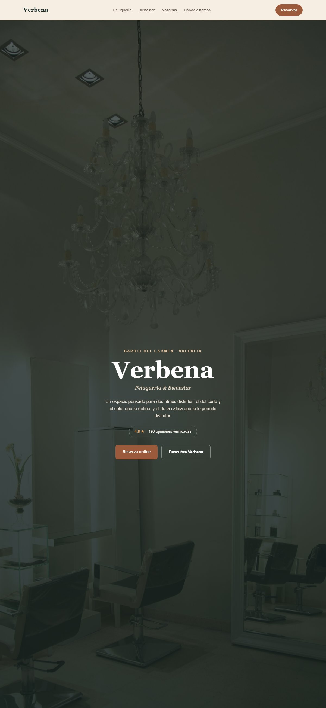

Verbena lleva nueve años en el barrio del Carmen, en Valencia: un solo local que junta una peluquería con un pequeño espacio de bienestar (masajes, rituales faciales, manicuras). Negocio familiar, sin socios ni inversión de fuera, con una clientela fiel que vuelve mes tras mes — pero casi ningún cliente nuevo llega ya por internet.
La propietaria nos escribió porque había notado algo muy concreto: en los meses de verano, cuando el barrio se llena de gente que todavía no conoce el negocio, eso apenas se traduce en reservas nuevas. Todo el crecimiento de los últimos años ha venido del boca a boca — un canal que funciona, pero que no escala.
Siguiendo el método OAE-360, el primer paso nunca es «hagamos una web»: es una auditoría real de cada canal, para confirmar que la oportunidad existe antes de proponer ninguna solución.
| Canal | Hallazgo | Gravedad |
|---|---|---|
| Web propia | No existe. Toda la presencia digital depende de la ficha de Google y de menciones sueltas en las redes de sus clientas. | Alta |
| Ficha de Google | Ficha activa y con buena valoración (4,8★/190), pero incompleta: sin fotos recientes, sin la categoría de «spa» o «bienestar» añadida, y solo el 20 % de las reseñas tienen respuesta del negocio. | Alta |
| SEO local | No aparece en el top 3 del mapa de Google para búsquedas como «peluquería Carmen Valencia» — competidores con peor valoración salen por delante por tener web propia y la ficha optimizada. | Alta |
| Redes sociales | Instagram activo pero sin enlace de reserva ni mención clara del servicio de bienestar — el 70 % de las publicaciones son solo de peluquería. | Media |
| Reservas | 100 % por teléfono o por el WhatsApp personal de la dueña — sin sistema online, con cuellos de botella en las horas punta. | Media |
| Venta cruzada interna | La peluquería y el espacio de bienestar se perciben como dos negocios distintos incluso entre las clientas habituales — el 80 % de las clientas de peluquería no sabe que existen los masajes. | Alta |
Con la auditoría cerrada, los objetivos se fijaron con la propietaria antes de diseñar nada:
Fijados con la propietaria: más reservas nuevas sin depender del boca a boca, y más servicios por clienta.
Web, ficha de Google, SEO local, redes y proceso de reserva — ver la sección 2.
Cada hallazgo clasificado por fase del embudo (atracción/conversión/retención) y priorizado por impacto y esfuerzo.
Web propia + SEO local + ficha de Google optimizada + un puente visible entre peluquería y bienestar — con fecha y responsable por tarea.
Diseño, desarrollo, contenido y medición — el resto de esta página.
Antes de cualquier diseño visual va la estructura: qué va arriba, qué compite por la atención y qué puede esperar un scroll más.
Esquema de baja fidelidad — decide jerarquía y prioridad antes de ninguna decisión estética.
Decisión clave de esta fase: el bloque «Dos mundos» no es decorativo — es la respuesta directa al hallazgo más grave de la auditoría («el 80 % de las clientas no sabe que existe el bienestar»). Va justo debajo de la portada, antes que ningún otro contenido, precisamente para forzar ese descubrimiento en el primer scroll.
En vez de limitarnos a explicar el concepto, construimos la web entera — el mismo nivel de trabajo que recibe cualquier cliente real de Faro Digital.

La portada de Verbena — identidad cálida (terracota + verde óxido), la reputación visible desde el primer segundo y el bloque «Dos mundos» justo debajo de la portada.
Cada decisión visual responde a un hallazgo de la auditoría, no a un gusto personal:
On GEO (optimización para buscadores con IA): los asistentes conversacionales como ChatGPT o el resumen con IA de Google responden mejor cuando la información del negocio (servicios, horario, ubicación, reputación) está estructurada de forma clara y coherente en la propia web — no solo en redes. Por eso el sitio lleva datos estructurados (schema.org LocalBusiness) desde el primer día, no como un añadido al final.
El caso Verbena resume la filosofía de Faro Digital: no llegamos vendiendo una web bonita. Llegamos con una auditoría que enseña exactamente por dónde se está perdiendo dinero ya, y una propuesta que apunta a esos puntos concretos — diseño, desarrollo, SEO local y estructura de contenido, como un solo sistema y no como servicios sueltos.
«Antes de sentarnos a diseñar nada, ya sabíamos exactamente qué le estaba costando clientas a Verbena. El diseño solo tenía que resolverlo.»